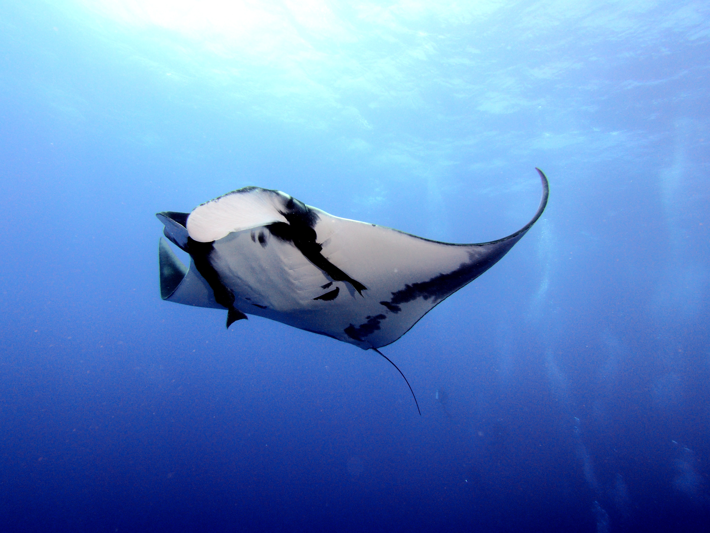
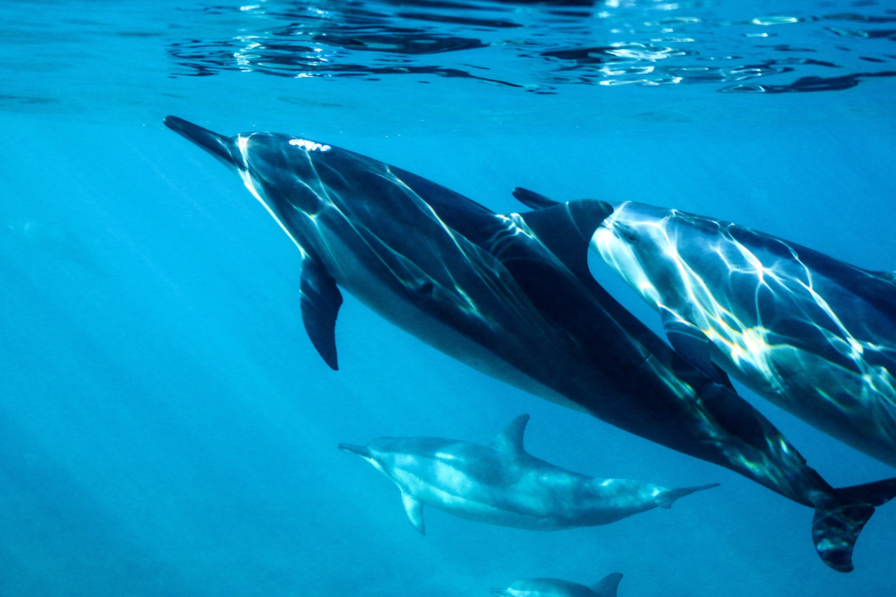

Ocean Activities
Surfing is a part of life in Hawaii. The art has been passed down through generations as a spiritual bond with the ocean. There's no better way to connect with the island spirit than surfing. We provide everything you need to enjoy a great day of surfing. No matter what your skill level is, we're confident it will be an experience of a lifetime!
Snorkeling the beautiful reefs of Hawaii is breathtaking. Our team of divers will outfit you with the all the gear you need to enjoy the magical waters of the Kona Coast.
Standup Paddling is a water sport born from surfing with roots going back as early as 3000 B.C. Let us outfit you with the proper board, paddle, and brief instruction.
Manta & Dolphin Dives
Manta Ray Dives We also have manta ray dives every evening at dusk. So if you're looking for an adventure of a lifetime, call the experts at Kona Ocean Adventures.
Swim With Dolphins Swim with dolphins in their natural habitat. Enjoy the feeling of being surrounded by dozens of dolphins.
 